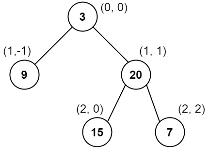
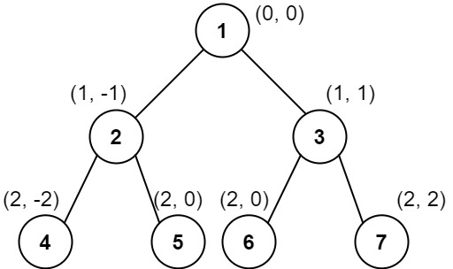

987. 二叉树的垂序遍历
DFS 给每个结点记 (列, 行, 值)，按「列→行→值」排序后按列分组输出；同一格的冲突靠第三键值序解决。
思路
- 坐标：根
(0,0)；左孩子(col−1, row+1)，右孩子(col+1, row+1)。DFS 一遍收集全部三元组。 - 排序键依次为：列升序、同列行升序（从上到下）、同行同列按值升序——第三键是本题特有的坑。
- 排完序线性扫：列号变化就新开一个列表，把值依次放进去。
- 不要按「每层 BFS」分组（同层同列的值序会被打乱），排序后分组最稳。
图解
最优解
1import java.util.*;2 3class Solution {4 public List<List<Integer>> verticalTraversal(TreeNode root) {5 List<int[]> nodes = new ArrayList<>(); // 收集 {列 col, 行 row, 值 val}6 dfs(root, 0, 0, nodes);7 // 列升序 → 同列行升序 → 同行列按值升序8 nodes.sort((a, b) -> a[0] != b[0] ? a[0] - b[0]9 : a[1] != b[1] ? a[1] - b[1] : a[2] - b[2]);10 List<List<Integer>> ans = new ArrayList<>();11 int prevCol = Integer.MIN_VALUE;12 for (int[] nd : nodes) {13 if (nd[0] != prevCol) { // 换列就新开一个列表14 ans.add(new ArrayList<>());15 prevCol = nd[0];16 }17 ans.get(ans.size() - 1).add(nd[2]);18 }19 return ans;20 }21 22 private void dfs(TreeNode node, int col, int row, List<int[]> nodes) {23 if (node == null) return;24 nodes.add(new int[]{col, row, node.val});25 dfs(node.left, col - 1, row + 1, nodes); // 左下：列减一26 dfs(node.right, col + 1, row + 1, nodes); // 右下：列加一27 }28}题目
给你二叉树的根结点 root ，请你设计算法计算二叉树的 垂序遍历 序列。
对位于 (row, col) 的每个结点而言，其左右子结点分别位于 (row + 1, col - 1) 和 (row + 1, col + 1) 。树的根结点位于 (0, 0) 。
二叉树的 垂序遍历 从最左边的列开始直到最右边的列结束，按列索引每一列上的所有结点，形成一个按出现位置从上到下排序的有序列表。如果同行同列上有多个结点，则按结点的值从小到大进行排序。
返回二叉树的 垂序遍历 序列。
示例 1：

输入：root = [3,9,20,null,null,15,7] 输出：[[9],[3,15],[20],[7]] 解释： 列 -1 ：只有结点 9 在此列中。 列 0 ：只有结点 3 和 15 在此列中，按从上到下顺序。 列 1 ：只有结点 20 在此列中。 列 2 ：只有结点 7 在此列中。
示例 2：

输入：root = [1,2,3,4,5,6,7]
输出：[[4],[2],[1,5,6],[3],[7]]
解释：
列 -2 ：只有结点 4 在此列中。
列 -1 ：只有结点 2 在此列中。
列 0 ：结点 1 、5 和 6 都在此列中。
1 在上面，所以它出现在前面。
5 和 6 位置都是 (2, 0) ，所以按值从小到大排序，5 在 6 的前面。
列 1 ：只有结点 3 在此列中。
列 2 ：只有结点 7 在此列中。
示例 3：
输入：root = [1,2,3,4,6,5,7] 输出：[[4],[2],[1,5,6],[3],[7]] 解释： 这个示例实际上与示例 2 完全相同，只是结点 5 和 6 在树中的位置发生了交换。 因为 5 和 6 的位置仍然相同，所以答案保持不变，仍然按值从小到大排序。
提示：
- 树中结点数目总数在范围
[1, 1000]内 0 <= Node.val <= 1000
题面取自力扣当前版本。
数据快照 2026-11-04。题面版权归力扣所有，本站点仅供本人学习使用，请勿对外发布。